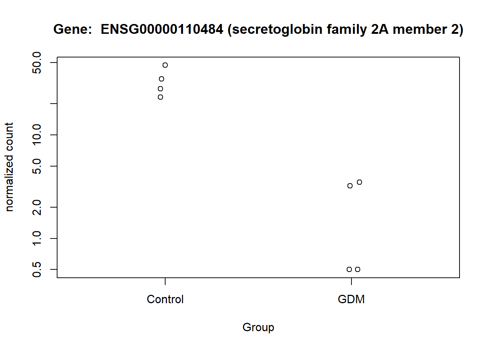
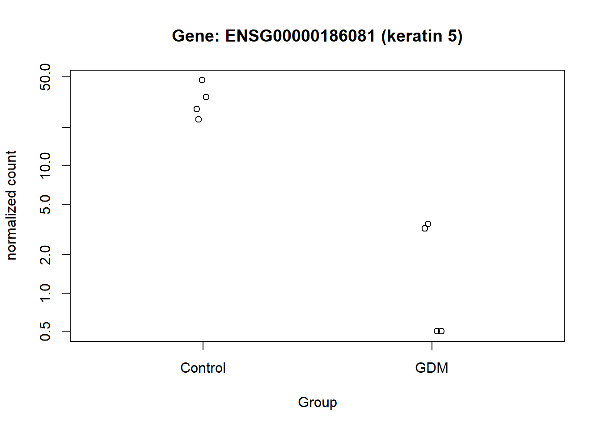
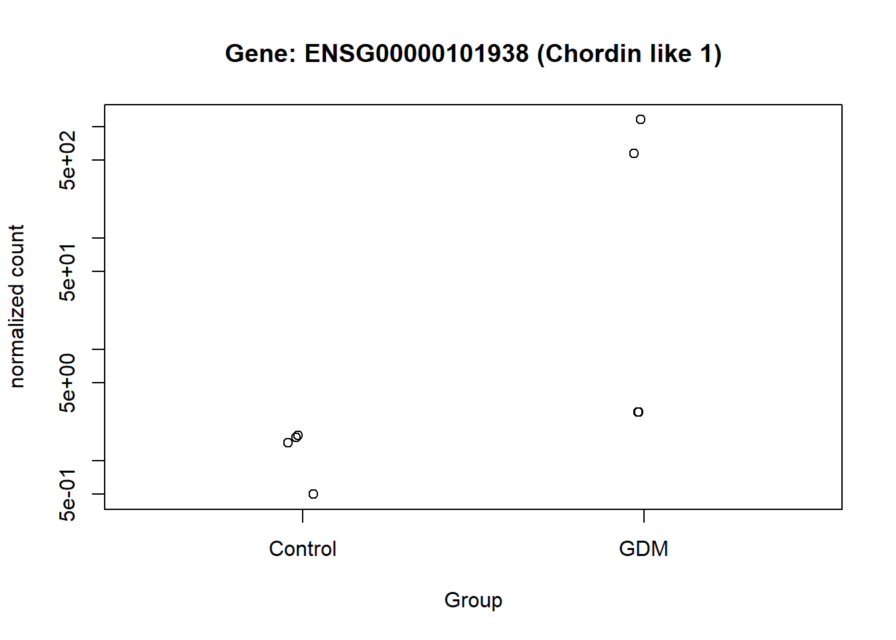
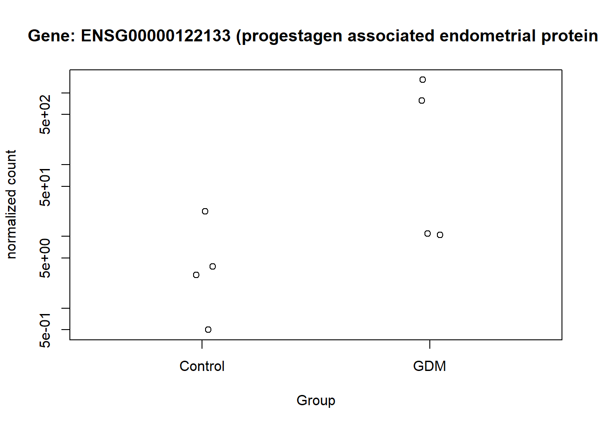
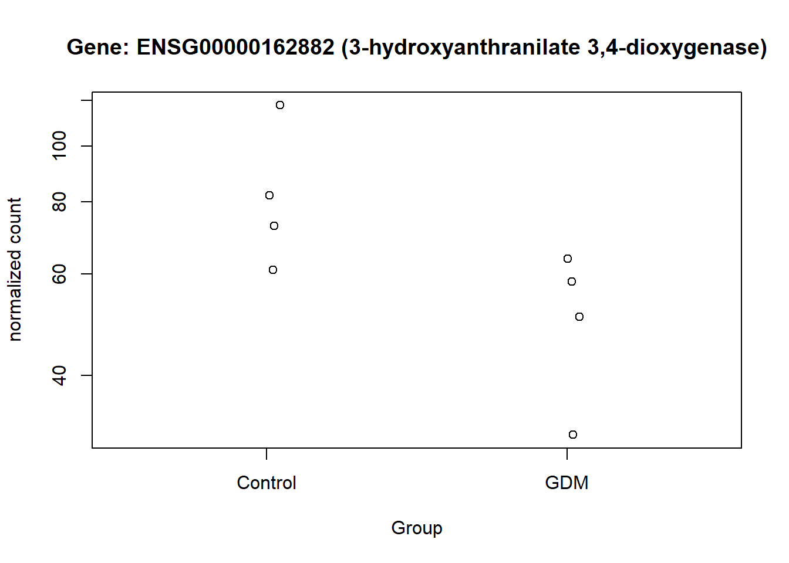

Differential Gene Expression in Placental Tissue from Women with and without Gestational Diabetes Mellitus
Introduction
Gestational diabetes mellitus (GDM) is among the most common complications of pregnancy, yet it remains frequently underdiagnosed. The condition is associated with increased risks of adverse outcomes for both mother and child, including the later development of type 2 diabetes and obesity. Identifying biomarkers that distinguish women who develop GDM from those who do not is therefore of considerable interest, as such markers could provide insights into the underlying pathophysiology of GDM and may also serve as predictive indicators to enable timely intervention (McIntyre et al. 2019).
This study utilized publicly available RNA sequencing data entitled “RNA sequence of gestational diabetes mellitus (GDM) and healthy control placentas”, obtained from the NCBI Gene Expression Omnibus (GEO) database (Wang and H 2021-12-31). The dataset comprises eight placental samples, four from women diagnosed with GDM and four from healthy controls. The mean gestational age at the time of sampling was approximately 37.2 weeks in the GDM group and 37.6 weeks in the control group, indicating comparable gestational ages across groups. All samples were collected postpartum from placental tissue. A detailed description of the experimental protocol is available on the GEO dataset webpage.
The aim of this analysis was to identify differentially expressed genes in the postpartum placenta between women who developed GDM and the control group. Furthermore, it was sought to investigate the biological processes associated with the significantly differentially expressed genes.
Data Overview:
Sample size: n = 4 (GDM) and n = 4 (Control)
Tissue source: Placenta (collected postpartum)
Gestational age at sampling: 37-38 weeks for both sampling groups
Sequencing platform: Illumina HiSeq 4000
Data Analysis
In the following sections, the data introduced above are analyzed. The workflow begins with preprocessing the data, preparing it for differential expression analysis (DEA). DEA is then carried out using the DESeq2 package, and the results are further refined through genomic control and multiple testing adjustments. All analyses and visualizations were created using R (version 4.4.2).
Data Preprocessing
Required packages for the analyses:
In this section, the count data and metadata are loaded into the document. Relevant information from both data frames is merged into a single data frame, after which mild filtering is applied to the count data. The filtering is done by removing genes where the sum of counts across all samples is below seven. These genes are removed because they are statistically unreliable, and their removal minimizes the effects of multiple testing. In addition, a separate data frame is created to capture the sample information (GDM or control). These steps prepare the data for the DESeq2 procedure (Love, Huber, and Anders 2014).
Show code
# Ensure correct directory
setwd("C:/Users/carol/OneDrive/Skrivebord/independent_research")
# getwd()
# Load Count data:
counts <- read.table("GSE154414_raw_counts_GRCh38.p13_NCBI.tsv.gz",
header=TRUE, sep="\t", row.names=1)
# Ensure counts is integers (for DESeq2)
counts[] <- lapply(counts, as.integer)
# Load meta data:
annot <- read.table("Human.GRCh38.p13.annot.tsv.gz",
header=TRUE, sep="\t", quote="", comment.char="")
# The count- and meta-data are merged into one dataframe
counts_annot <- merge(annot, counts, by.x="GeneID", by.y="row.names")
# Make a dataframe that descripes the sample-information (GDM or control)
# colnames(counts)
sample_info <- data.frame(
row.names = colnames(counts),
condition = factor(c("GDM","GDM","GDM","GDM","Control","Control","Control","Control"),
levels = c("Control","GDM")) # Control as reference
)
# Perform filtering
keep <- rowSums(counts) >= 7
counts_filt <- counts[keep, ]
# sum(keep); dim(counts_filt)Differential Expression Analysis using the DESeq2 Package
In this section, DEA is performed on the count data using the DESeq2 package. This involves first creating a dds object and then running the DESeq function on that object. The log-fold changes (LFCs) obtained from DESeq2 are subsequently shrunk using apeglm to improve robustness and interpretability. Next, a variance-stabilizing transformation (VST) is applied to the dds object. The VST-transformed data is suitable for visualizations such as PCA plots (Love, Michael I, Zhu, Anqi, and Ibrahim, Joseph G 2018). Finally, the DESeq2 results are combined with relevant metadata into a new data frame for downstream analyses.
Show code
# Make dds objec for DESeq
# Condition : GDM or Control
dds <- DESeqDataSetFromMatrix(countData = counts_filt,
colData = sample_info,
design = ~ condition)
# Perform DEA using DESeq on the dds object
dds <- DESeq(dds)
# Extract the results
# Control is baseline
res <- results(dds, contrast = c("condition","GDM","Control")) # GDM vs Control
# Perform "apeglm" LFC shrinkage (Empirical Bayes Shrinkage) onto the LFC values
res <- lfcShrink(dds, coef = "condition_GDM_vs_Control", type = "apeglm")
# Order results with regard to the adjusted p-values
res_ord <- res[order(res$padj), ]
# Make the ordered matrix into a dataframe
res_df <- as.data.frame(res_ord)
# Creates a new column called "GeneID" and fills it with the rownames
res_df$GeneID <- rownames(res_df)
# Merge columns from the meta-data with the results dataframe by the "GeneID" column
res_annot <- merge(annot[, c("GeneID", "EnsemblGeneID", "Symbol","GeneType", "Description")], res_df, by = "GeneID", all.y = TRUE)
# A list of the top significant genes
sig_res <- as.data.frame(subset(res_ord, padj < 0.05))
# Transformed counts by vst-transformation
vsd <- vst(dds, blind = FALSE)Next, visualizations of the DESeq2 results are presented. For the PCA plot, the VST-transformed data was used. The PCA shows some separation between the groups, mainly along PC1, but also considerable variation within groups, making the distinction between them less clear (Figure 1). This indicates that it may be difficult to identify strong candidate features that clearly separate the two groups in the data.
Show code
# PCA plot
plotPCA(vsd, intgroup = "condition", ntop = 500, pcsToUse = 1:2)An MA-plot is also created, which demonstrates that many of the genes have LFC values close to zero, indicating no differential expression. In other words, most genes are not differentially expressed between the sample groups. The strongest signals are expected on the right side of the plot, where genes have higher expression levels and larger LFC valuesndefined (Figure 2). This suggests that there may be relevant candidates for distinguishing between the two groups, because significant genes are marked in this region. Confidence in these results is strengthened by the fact that shrinkage has been applied to the LFC values, making them re
Show code
# MA-Plots using the base means and the LFCs
plotMA(res, alpha = 0.05, xlab = "Mean of Normalized Counts", ylab = "Log-Fold Change", colNonSig = "gray60", colSig = "red", colLine = "black")Genomic Control
Genomic Control recalibrates the test statistics and p-values under the assumption that the median of the test statistics is a trustworthy indicator of bias within the data. Genomic Control may be preferred if a technical bias is suspected. First, the p-value distribution is visualized to assess whether any unexpected patterns are present. In this context, the raw p-value distribution appears exceptionally well aligned with the theoretical expectation (right-skewed, peaking on the left and then followed by an almost perfectly uniform distribution) (Figure 3). It might therefore seem redundant to perform Genomic Control; however, it will be applied to ensure data integrity and to minimize potential influence from technical bias.
Code for performing Genomic Control:
Show code
# Get the LFCs and SEs for each comparison
betas <- res_annot$log2FoldChange
ses <- res_annot$lfcSE
# Compute Wald statistics
z_scores <- betas / ses
# Chi-squared stats
wald_stats <- z_scores^2
# Estimate genomic inflation factor (lambda)
lambda_gc <- median(wald_stats, na.rm = TRUE) / qchisq(0.5, df = 1) # ~0.456
lambda_gc_vec <- lambda_gc # Save inflation factor
# Adjust test stats
GC_adjusted_test_statistics <- wald_stats / lambda_gc
# Recalculate p-values
GC_adjusted_pvalues <- pchisq(GC_adjusted_test_statistics, df = 1, lower.tail = FALSE)
# Make to dataframes
GC_adjusted_test_statistics <- data.frame(GC_adjusted_test_statistics)
GC_adjusted_pvalues <- data.frame(GC_adjusted_pvalues)
# Bind to Big dataframe
res_annot <- cbind(res_annot, GC_adjusted_test_statistics)
res_annot <- cbind(res_annot, GC_adjusted_pvalues) A p-value distribution is again created, this time using genomic-control–adjusted p-values. The distribution shows a U-shaped pattern, indicating that genomic control overcorrected the p-values, as expected (Figure 4). Therefore, the GC-adjusted p-values and test statistics will not be used in further downstream analysis.
Multiple Testing Adjustment
The DESeq2 package provides locally adjusted p-values using the Benjamini–Hochberg (BH) procedure. In addition, the raw p-values can be manually adjusted using several alternative methods, including Holm, the q-value method, and Independent Hypothesis Weighting (IHW). As these methods differ in their degree of conservatism, applying multiple approaches allows for a more comprehensive assessment of the most appropriate adjustment strategy for the dataset. The adjusted p-values are appended to the full data frame, res_annot.
Show code
# Holm (very conservative)
res_annot$padj_Holm <- p.adjust(res_annot$pvalue, method = "holm")
# Benjamini-Hochberg (less conservative)
res_annot$padj_BH <- p.adjust(res_annot$pvalue, method = "BH")
# Q-value (even less conservative)
res_annot$padj_qvalue <- qvalue(res_annot$pvalue)$qvalues
# IHW (most sophisticated)
fit <- ihw(pvalues = res_annot$pvalue, covariates = res_annot$baseMean, alpha = 0.01)
res_annot$padj_IHW <- adj_pvalues(fit)The distributions of the adjusted p-values are visualized for two purposes: (1) to help select the most appropriate adjustment method for this exploratory study, and (2) to provide a clearer understanding of the statistical power in the data.
In this case, the IHW method did not effectively make use of the covariate (baseMean) to distinguish true signal from noise, resulting in most tests being classified as non-significant and making the method overly conservative (Figure 8). By contrast, the q-value method identified a greater number of significant tests (Figure 7). Given the exploratory nature of this study, the q-value method was selected, with the caveat that, given the limited sample size, it may increase the risk of false positives. The q-value method was preferred over the BH adjustment because it represents a more sophisticated approach.
Show code
plot_histogram(res_annot, "padj_Holm", color = "orange", title = "")Show code
plot_histogram(res_annot, "padj_BH", color = "purple", title = "")Show code
plot_histogram(res_annot, "padj_qvalue", color = "pink", title = "")Show code
plot_histogram(res_annot, "padj_IHW", color = "limegreen", title = "")Visualizations of the Results
In this section, the results from the DESeq2 analysis are visualized using q-value–adjusted p-values. The aim is to highlight genes that appear to be significantly differentially expressed between the two groups (GDM and control) and to explore their potential biological relevance.
Prior to visualization, a data frame was prepared in which rows with missing q-values were removed. Such missing values typically arise when a gene has insufficient information (e.g., very low counts or extreme dispersion), preventing the computation of a reliable adjusted p-value. Although these genes could, in principle, be of biological interest, the limited sample size or high level of noise in the data renders their statistical evidence too unreliable for interpretation in this context (Love, Huber, and Anders 2014).
A volcano plot was generated with the LFC on the x-axis and the statistical significance on the y-axis. The 15 most significant genes were labeled directly on the plot for ease of interpretation. Among these, the gene ENSG00000161634 appears to be of particular interest (Figure 9).
In this figure the top 15 up- and down-regulated genes are listed according to their level of LFC. The dot appointed at each gene marks their level of significance by the adjusted p-value. The three genes with the lowest LFC and the ENSG00000240567 gene (high significance), are of particular interest in relation to the down-regulated genes. The three genes with the highest LFC are of particular interest concerning the up-regulated genes (Figure 10).
The normalized counts for the genes of particular interest were visualized, to demonstrate the difference between the GDM and control group. From the visualization especially gene ENSG00000161634 and ENSG00000110484 seem to be of interest, I will refer to them as gene dermicidin and LINC02067 (both names were obtained from the metadata,). The expression of dermicidin demonstrates very clear intervariability (variation between groups) and very low intravariability (variation within group) (Figure 11). For LINC02067 the intravariability is a bit higher for the control group, in comparison to dermicidin, but the intervariability is still very clear. Especially the normalized counts for the GDM group for LINC02067 are very close togetherndefined (?@fig-LINC). This suggests that dermicidin and LINC02067 are down-regulated in the GDM group compared with the control group in the postpartum placenta.





This visualization provides an overview of the results generated in this analysis. It displays the 16 genes with the highest LFC values, along with their GeneIDs/Ensembl GeneIDs and a corresponding description. The fill color of the bars indicates the level of significance. The plot highlights ENSG00000161634 (dermicidin) and ENSG00000240567 (LINC02067) as particularly noteworthy, especially compared with the other genes that have high LFC values (Figure 13).
Discussion & Conclusion
The analysis identified two genes that appear to be significantly differentially expressed between the GDM and control groups. These findings are clearly illustrated in (Figure 11) and (Figure 12). One of these genes, ENSG00000161634 (dermicidin), encodes a secreted protein with two major functional domains: (1) a C-terminal peptide with antimicrobial properties, and (2) an N-terminal peptide that promotes neural cell survival under conditions of severe oxidative stress (NCBI 2025). This finding is particularly relevant given that GDM has been strongly associated with increased oxidative stress, suggesting that dermicidin and its protein products may represent potential biomarkers for GDM(Saucedo et al. 2023).
Another gene of potential interest is ENSG00000240567 (LINC02067), which appears to be differentially expressed between the GDM and control groups. This gene encodes a long intergenic non-protein coding RNA (lincRNA) and therefore does not produce a protein (National Center for Biotechnology Information 2025). Although its specific function has not been described in the literature, its differential expression suggests that it may still be biologically relevant and could serve as a potential biomarker.
This analysis uncovered several potentially relevant genes. However, the limited sample size likely reduced statistical power, such that only very strong signals could be detected with confidence. Future studies employing larger datasets will be valuable for validating these findings. Moreover, longitudinal datasets that include samples from different stages of gestation could provide important insights into how molecular profiles change over time and how these changes are influenced by GDM. Such data would help disentangle gestational age-related variation from disease-specific effects, thereby clarifying the true molecular signature of GDM.